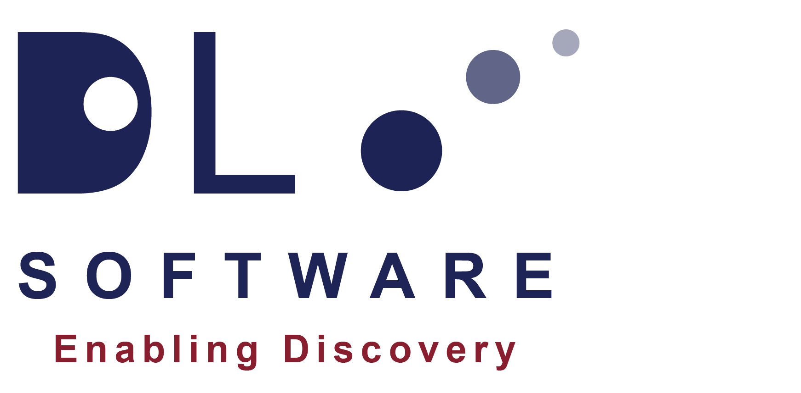

Introduction to DL_Software¶
{kind=link}
DL_Software is the collective term to describe a number of computational chemistry software packages developed at Daresbury Laboratory. The software consists of both simulation and utility packages relate to materials modelling. Each software package is developed to deal with different aspects of theories, to probe the behaviour of a simulated material at different length and timescales.
The philosophy behind the software development is to maintain a ‘forward-looking’ stance, making them as agnostic as possible, to ensure the computer programs are future-proofed and capable to handle a variety of large and complex simulation model. The software codes are constantly tested and modified with the inclusion of advanced computational methodologies and innovative schemes so as to completely exploit the capability of the state-of-the-art massively parallelised supercomputers. The aim is to produce quality software that can meet and exceed the current modelling demands of modelling communities and to readily provide new modelling capabilities of more complex and grand-challenging problems.
DL_Software has been applied in both academics and industrial settings and can adapt to new scientific challenges and technological advances. For many years, DL_Software has been the main flagship codes and provide R&D services to a number of UK academic consortia such as CCP5, MCC, CCP-BioSim and UKCOMES. Below lists the the software packages that are currently available:
DL_POLY - a general purpose classical molecular dynamics (MD) simulation software developed by IT Todorov and W Smith. It is capable of handling ‘large’ molecular systems (i.e. > 100,000 atoms)
DL_FIELD - a force-field construction tool built for DL_POLY by CW Yong
D_ATA - atom typer and analyser software tool built for atomistic systems by CW Yong
DL_ANALYSER - a general analysis tool built for DL_POLY’s trajectory files by CW Yong
DL_MONTE - a general purpose parallel Monte Carlo simulation package developed by John Purton, Nigel Wilding and Steve Parker
DL_MESO - a general purpose mesoscale simulation package developed by Michael Seaton. It supports both Lattice Boltzmann Equation (LBE) and Dissipative Particle Dynamics (DPD)
CHEMSHELL - a scriptable computational chemistry environment with support for hybrid QM/MM simulations for mutliscale modelling. Hybrid QM/MM is its main strength
DL_FIND - a powerful and flexible geometry optimisation library and is the recommended optimiser module in ChemShell